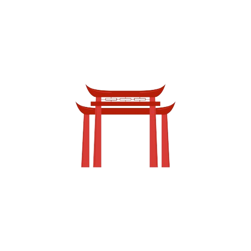
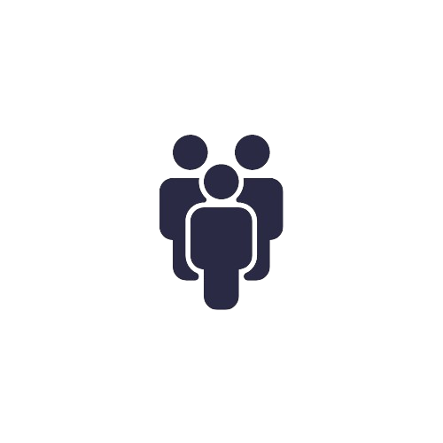

Cultura

Muitas artes marciais têm suas raizes em filosofias orientas, como o Budismo e o Confucionismo.
Os praticantes frequentemente incorporam esses valores em suas vidas,como disciplina, respeito, humildade e autocontrole. Além disso, os praticantes muitas vezes entram em contato com línguas estrangeiras como japonês, chinês e coreano.
Os praticantes frequentemente incorporam esses valores em suas vidas,como disciplina, respeito, humildade e autocontrole. Além disso, os praticantes muitas vezes entram em contato com línguas estrangeiras como japonês, chinês e coreano.
Saúde
 A prática regular de artes marciais melhora o condicionamento físico geral. Isso inclui
aumento
da força muscular, resistência cardiovascular, flexibilidade, coordernação motora e
equilíbrio.
A prática regular de artes marciais melhora o condicionamento físico geral. Isso inclui
aumento
da força muscular, resistência cardiovascular, flexibilidade, coordernação motora e
equilíbrio.
Além disso, ajuda os praticantes a reduzir a gordura corporal, também sendo um forte aliado na saúde cardiovascular e na luta contra transtornos psicológicos.
A prática regular de artes marciais melhora o condicionamento físico geral. Isso inclui
aumento
da força muscular, resistência cardiovascular, flexibilidade, coordernação motora e
equilíbrio.Além disso, ajuda os praticantes a reduzir a gordura corporal, também sendo um forte aliado na saúde cardiovascular e na luta contra transtornos psicológicos.
Social

Nas artes marciais, os praticantes aprendem técnicas para lidar com conflitos de forma pacífica.
Isso envolve o desenvolvimento de habilidades de comunicação eficaz, capacidade de negociar e
encontrar soluções mutuamente benéficas.
As artes marciais ofertam um ambiente que promove habilidades sociais importantes, que são transferíveis para outras áreas da vida social.
As artes marciais ofertam um ambiente que promove habilidades sociais importantes, que são transferíveis para outras áreas da vida social.
Cognitivo
 O treinamento e a prática de técnicas de combate, demanda o desenvolvimento de estratégias para
antecipar e reagir aos movimentos do oponente. Isso promove o pensamento estratégico, a tomada de
decisões rápidas e a capacidade de adaptar-se a situações em constante mudança.
O treinamento e a prática de técnicas de combate, demanda o desenvolvimento de estratégias para
antecipar e reagir aos movimentos do oponente. Isso promove o pensamento estratégico, a tomada de
decisões rápidas e a capacidade de adaptar-se a situações em constante mudança.
Além disso, todo esse treinamento pode fortalecer a memória de curto e longo prazo dos praticantes.
O treinamento e a prática de técnicas de combate, demanda o desenvolvimento de estratégias para
antecipar e reagir aos movimentos do oponente. Isso promove o pensamento estratégico, a tomada de
decisões rápidas e a capacidade de adaptar-se a situações em constante mudança.
Além disso, todo esse treinamento pode fortalecer a memória de curto e longo prazo dos praticantes.